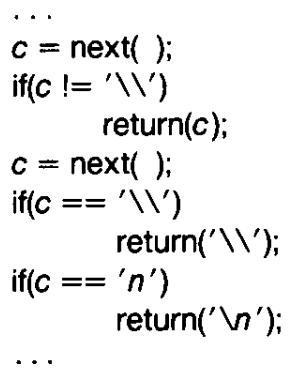

Examples of side-channels: time, power, radio-frequency, heat, cache misses, network messages, …
The time taken by a proram may leak some information about some secret that is used by the program for some processing. A timing-difference of say 1-2 microseconds is often enough for the attacker to obtain a reliable signal to be able to deconstruct (a part of) the secret bit-by-bit.
Simple example (also a part of your lab):
int check_password(char const* input_password, char const* expected_password)
{
char const* p = input_password;
char const* q = expected_password;
while (*p == *q) {
//some computation that may take 1-2us
if (*p == '\0') {
return 1; //paswwords match
}
p++;
q++;
}
return 0; //passwords mismatch
}Invoke this function with different strings for input_password and time the program.
Researchers have shown that timing-based attacks can be remotely mounted over the network on the RSA implementations to identify 200 bits of a private key in Apache2/SSL.
If we can identify the accessed memory addresses as a function of a secret that is used for processing by a privileged proram, a concurrently running unprivileged program can profile the cache to identify the likely address that may have been accessed, and map it back to the possible bits of the secret key. e.g., content-based caching, memoization, etc.
char secret[100];
foo() {
// read/write a[secret[i]]
}If the attacker is able to co-locate on the same physical machine as the target, then the attacker can do one of the following two things:
It can warm up all the cache lines with its own data, e.g., by repeately accessing all the addresses until the cache is full.
Then invoke the target on a carefully crafted input
Then read its own data back and time these reads. For reads that take longer than others, it is likely that those addresses have been accessed by the target too, which caused cache replacement of the attacker’s data for those reads.
By carefully analyzing this cache-timing information, it can try and reconstruct the secret (on which the memory accesses may depend).
If the attacker and target can possibly share common pages, e.g., they are running in the same address space (e.g., sharing a common service), then:
Instead of warming the cache, first flush the cache
Get the target to run
Access all the memory regions that may have been accessed by the target, and profile these accesses. The data that was brought in the cache by the target will be accessed faster.
Ensure in software that the accessed memory addresses and CPU usage are mostly independent of the secret key.
Let’s say that that the memory of the target contains public data and secret data stored close to each other. Also, let’s say that the accessed memory addresses depend on some of the public data.
char public[10];
char secret[100];
foo() {
// read/write a[public[i]] in a loop
}But as a prefetching/speculative mechanism, the hardware processor may also read a[secret[j]] for small values of j. This can allow the attacker to mount cache-line based side-channel attacks even though the software program was careful to not allow memory accesses to be a function of the secret.
A quine is a computer program which takes no input and produces a copy of its own source code as its only output. The standard terms for these programs in the computability theory and computer science literature are “self-replicating programs”, “self-reproducing programs”, and “self-copying programs”.
# Example C. Note that %r will quote automatically.
c = 'c = %r; print(c %% c)'; print(c % c)Turing Award Lecture by Ken Thompson
“To what extent should one trust a statement that a program is free of Trojan horses? Perhaps it is more important to trust the people who wrote the software.”
“The C compiler is written in C. What I am about to describe is one of many”chicken and egg" problems that arise when compilers are written in their own language."
 “Figure (shown above) is an idealization of the code in the C compiler that interprets the character escape sequence. This is an amazing piece of code. It knows in a completely portable way what character code is compiled for a new line in any character set. The act of knowing then allows it to recompile itself, thus perpetuating the knowledge.”
If in a different character set, the ASCII code of ‘’ is different, then we will get that character set’s value (the information is baked into the compiler that will be used to compile this compiler).
Suppose we wish to add a new character ’ that represents a vertical tab as follows. But this will not work at the compiler has not yet learnt the escape-sequence for the vertical tab character.
So we create a temporary non portable implementation as follows

Once the compiler has learned the escape sequence through the non-portable implementation, we can go back to the portable implementation.